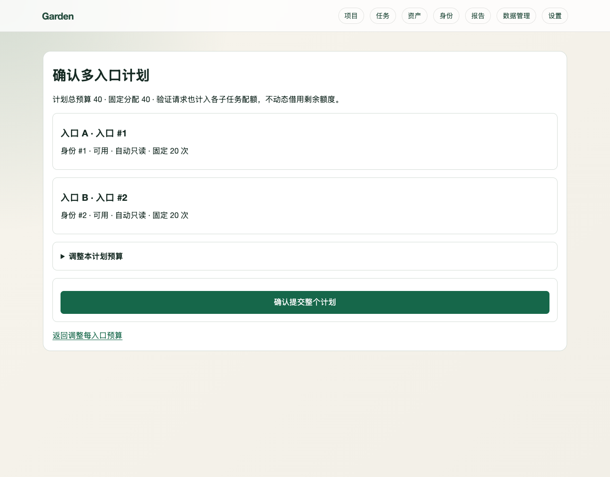
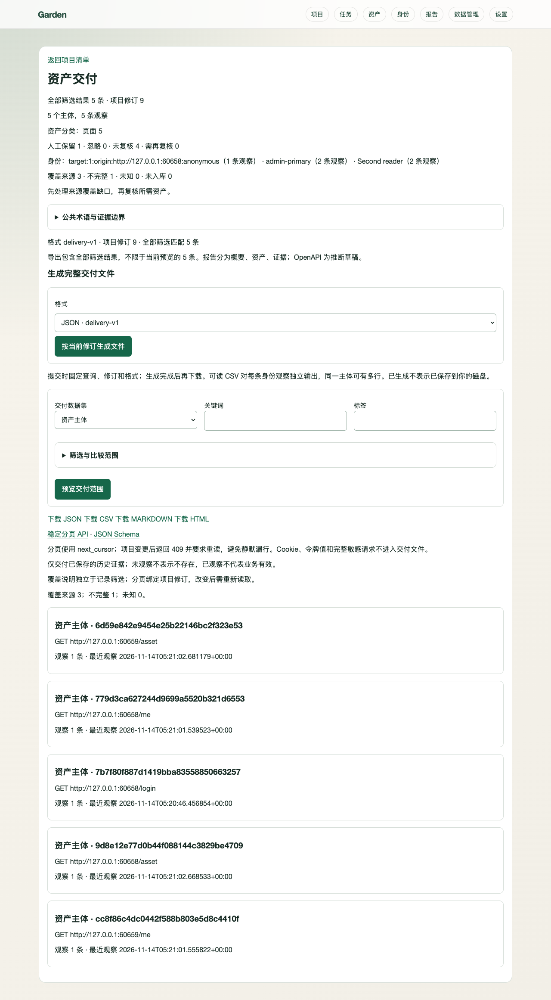

发现
有界采集，保留来源
快速、平衡与浏览器深入预设；结合页面、Sitemap、JS 与导入线索，按路径族分配预算。未请求线索保留为候选。
发现页面、接口与资源，汇集匿名与登录态观察。用同一套项目清单完成筛选、人工复核、报告交付与后续复查。
快速、平衡与浏览器深入预设；结合页面、Sitemap、JS 与导入线索，按路径族分配预算。未请求线索保留为候选。
自行完成验证码后恢复验证，再采集登录态资产。显式人工浏览记录用户实际请求，自动采集不重放人工 POST。
项目计划统一预览入口、身份和预算，按独立单 origin 子任务执行，结果汇入同一项目，不跨身份借用预算。
主体、请求变体、身份观察、候选与关系分别保留。筛选、保存视图、批量复核并撤销；模板仅改变展示。
三层报告与完整 JSON、可读 CSV、HTML、PDF、ZIP。固定筛选与修订，分块生成，不只导出当前屏幕的一页。
记录时效与变化，显式开启固定间隔复查；重启不补发。私有备份恢复到空目录，计划暂停，保留人工选择。
输入已授权 URL，选择预设，检查同源边界和实际预算后开始。普通扫描可独立运行。
发现策略与预算 →导入或人工建立登录态，在新上下文验证后采集；多个入口分别绑定身份和固定配额。
登录、验证码与恢复验证 →在项目清单复核筛选结果，以概要、资产和证据交付。需要长期维护时再显式启用复查。
项目清单与人工复核 →截图来自 v2.0 合成验收旅程：匿名与两入口两身份采集、人工保留、导出、周期复查及隔离恢复。界面中的数量只代表该样本。


任务执行结束后仍可能有预算、超时、身份或未请求候选造成的缺口。未知不等于不存在。
保留的是人的判断；系统仍展示已有响应、登录回退、软 404 等线索及原始来源。
Web 明确区分已生成与发起下载；App 选择保存位置并实际写入后才提示成功。
公开交付脱敏，私有备份可能含会话秘密。恢复只写入空目录，周期计划保持暂停。
git clone https://github.com/Moxxkidd/Garden.git cd Garden ./install.sh garden --version garden doctor garden ui
需要 Python 3.10+；安装器会备份并升级所选数据目录。登录、人工浏览、浏览器深入和 PDF 还需要匹配的 Chromium，详见安装文档。doctor 只读，不访问扫描目标。
运行候选 8146a43 已验证真实 v1.0 结构升级、完整合成旅程、wheel / sdist / macOS DMG 与 App 实际保存。Python 3.10 / 3.12 各 993 passed，CLI 和 Docker 检查通过。
当前没有公开发行包。macOS 仅为 Apple Silicon / 26.0+ 本地 Beta；正式签名、公证、更新渠道、许可证再分发及外部干净机器仍待核实。合成结果不代表实际站点发现率。
完整验收与包 SHA256 · 版本索引 · 历史沿革